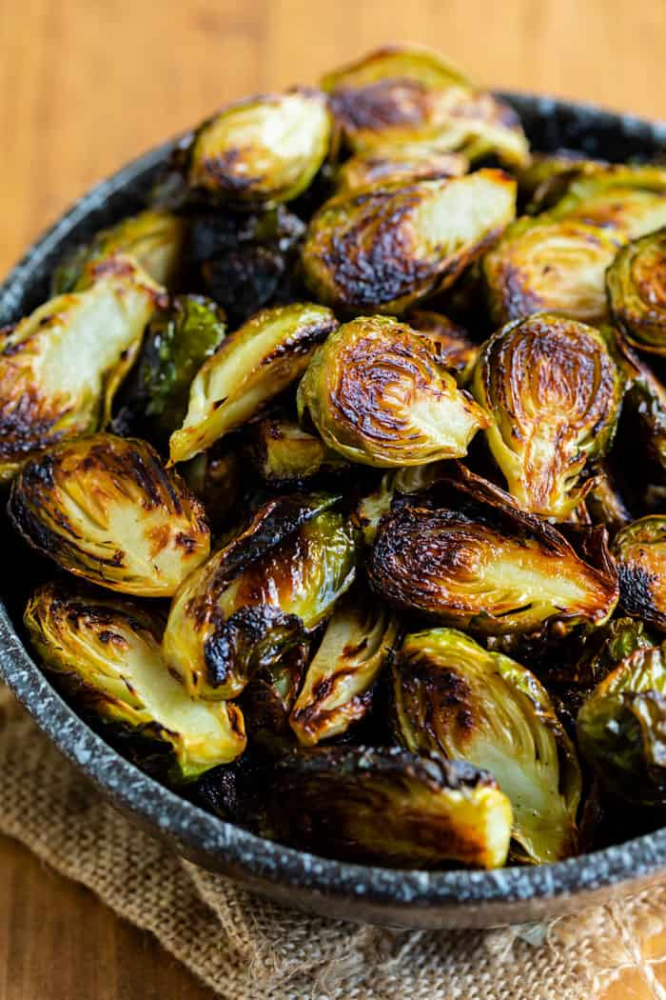

Tasty Sprouts

All you need is a pot, a pan, some sprouts, some salt, and some vinegar.
- Roast Brussels sprouts with salt at 450 until crispy on the pan side.
- At the same time boil balsamic vinegar down to about 1/3 the original volume.
- Mix and serve.